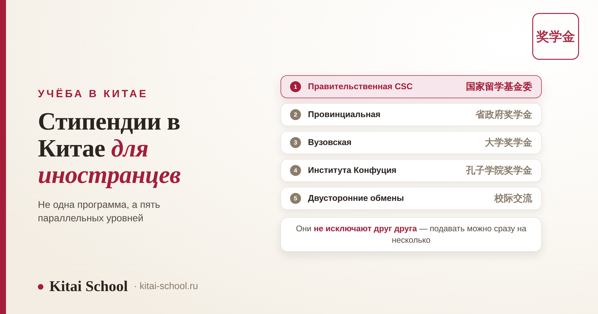
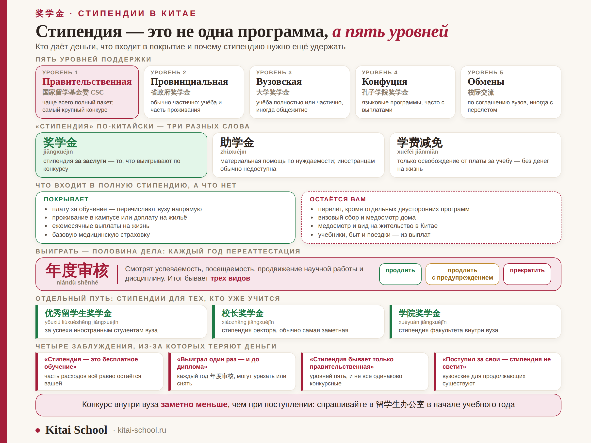

Учёба в Китае
Стипендии в Китае для иностранцев: какие бывают и что они покрывают


Слово «стипендия» в разговорах о Китае обычно означает CSC — и на этом познания заканчиваются. На деле поддержка иностранных студентов устроена в пять уровней, от правительственной программы до внутренних стипендий отдельного факультета, и на каждом уровне свои деньги, свой конкурс и свои условия. Разберём всю карту целиком: кто и что даёт, что входит в покрытие, а что остаётся вашим, и главное — почему выигранная стипендия ещё не значит, что она ваша до конца обучения.
Уровней пять: правительственная CSC, провинциальные, вузовские, стипендии Института Конфуция и двусторонние обмены — и они не исключают друг друга. По-китайски «стипендия» это три разных слова: 奖学金 за заслуги, 助学金 по нуждаемости и 学费减免 — просто освобождение от платы. Даже полная стипендия не закрывает перелёт, визовый сбор и медосмотр дома. И её нужно удерживать: каждый год стипендиаты проходят 年度审核, переаттестацию, по итогам которой финансирование продлевают, урезают или снимают.
Пять уровней системы: кто вообще даёт деньги
Главная ошибка — считать, что стипендия одна. Программы идут параллельно, у них разные организаторы и разные конкурсы, и подавать можно сразу на несколько.
| Уровень | Кто даёт | Что обычно покрывает | Кому подходит |
|---|---|---|---|
| Правительственная CSC 国家留学基金委 | правительство КНР через China Scholarship Council | чаще всего полный пакет: обучение, общежитие, выплаты, страховка | всем ступеням; самый крупный и самый конкурсный путь |
| Провинциальная 省政府奖学金 | правительство провинции или города | обычно частично: обучение и часть проживания | тем, кто гибок в выборе города |
| Вузовская 大学奖学金 | сам университет | обучение полностью или частично, иногда общежитие | тем, кто уже выбрал конкретный вуз |
| Института Конфуция 孔子学院奖学金 | Chinese International Education Foundation | языковые программы, часто со стипендией на жизнь | изучающим китайский и будущим преподавателям |
| Двусторонние обмены | межвузовские и межгосударственные соглашения | условия зависят от соглашения, иногда с перелётом | студентам вузов-партнёров |
Уровни не конкурируют между собой: можно подать на CSC через один вуз, параллельно на университетскую стипендию в другом и на программу Института Конфуция. Единственное типичное ограничение — две полные государственные стипендии одновременно не дают. Как раскладывать заявки по вузам, разобрано в статье про гранты на обучение в Китае.
奖学金, 助学金 и 学费减免: три разных слова
Русское «стипендия» склеивает три вещи, которые в Китае различают строго. Из-за этой склейки люди читают описание программы и понимают его не так.
| Слово | Чтение | Что это на самом деле |
|---|---|---|
| 奖学金 | jiǎngxuéjīn | стипендия за заслуги: выигрывают по конкурсу, это и есть то, что мы обсуждаем |
| 助学金 | zhùxuéjīn | материальная помощь по нуждаемости; иностранным студентам обычно недоступна |
| 学费减免 | xuéfèi jiǎnmiǎn | освобождение от платы за обучение полностью или частично — и всё, без денег на жизнь |
| 全额奖学金 | quán'é jiǎngxuéjīn | полная стипендия: обучение, проживание, выплаты, страховка |
| 部分奖学金 | bùfen jiǎngxuéjīn | частичная: закрывает только часть пунктов |
Практический вывод простой. Когда вуз пишет, что «предоставляет поддержку иностранным студентам», это может означать и полный пакет, и одно только освобождение от платы за учёбу. Спрашивайте формулировку целиком: 全额 или 部分, входит ли 住宿 (проживание) и есть ли 生活费 (деньги на жизнь).
Что входит в покрытие, а что остаётся вам
Полная стипендия — это не «всё бесплатно». Вот честный состав.
| Статья | Кто платит |
|---|---|
| Плата за обучение | стипендия — перечисляется вузу напрямую |
| Проживание в кампусе | стипендия — место в общежитии или доплата на жильё |
| Ежемесячные выплаты на жизнь | стипендия — сумма зависит от ступени обучения |
| Базовая медицинская страховка | стипендия — страховка для иностранных студентов |
| Перелёт | вы сами, кроме отдельных двусторонних программ |
| Визовый сбор и медосмотр дома | вы сами, до вылета |
| Медосмотр и вид на жительство в Китае | вы сами, после приезда |
| Учебники, быт, поездки | вы сами, из ежемесячных выплат |
Конкретные суммы ежемесячных выплат различаются по ступеням, пересматриваются и зависят от программы, поэтому здесь мы их не называем: ориентиры и подробный разбор того, что значит «на бюджет», собраны в статье как поступить в Китай на бюджет, а сколько реально уходит на жизнь в разных городах — в статье дорого ли в Китае. Перед подачей суммы обязательно сверяйте на текущий год у самого вуза.

Из личного опыта
Одна наша студентка выиграла полную стипендию и первый год откровенно выдохнула: место есть, деньги приходят, можно расслабиться. Училась ровно настолько, чтобы закрывать предметы, на встречи научной группы ходила через раз.
Весной ей пришло письмо о результатах 年度审核 — ежегодной переаттестации. Стипендию сохранили, но с формулировкой, которую в вузе называют предупреждением: ещё один такой год — и финансирование пересмотрят. Она искренне не знала, что стипендию вообще пересматривают: в её голове это была выигранная один раз вещь.
С тех пор я говорю всем, кто подаётся: положение о стипендии нужно прочитать в первый же месяц, а не на втором году. Там написано, что именно смотрят при пересмотре и какие пороги считаются нормой. Это десять страниц скучного текста, которые стоят всей суммы за оставшиеся годы.
年度审核: стипендию нужно ещё удержать
Про эту часть почти не пишут, а она определяет, доедете ли вы на стипендии до диплома. Практически все программы предусматривают 年度审核 (niándù shěnhé) — ежегодную переаттестацию стипендиата.
| На что смотрят | Почему это важно |
|---|---|
| Успеваемость и закрытые зачётные единицы | основной показатель; завалы и пересдачи видны сразу |
| Посещаемость | считается формально, по журналам и отметкам |
| Продвижение научной работы | для магистрантов и аспирантов: отзыв научного руководителя |
| Дисциплина и соблюдение правил | нарушения режима и правил вуза учитываются отдельно |
| Продление вида на жительство и регистрация | формальности тоже входят в проверку |
Итог переаттестации бывает трёх видов: продлить без изменений, продлить с предупреждением или прекратить финансирование. Второй вариант встречается чаще всего и означает ровно то, что написано: год на исправление.
Конкретные пороги, сроки и последствия у каждой программы и каждого вуза свои и время от времени меняются. Поэтому единственный надёжный источник — положение о вашей стипендии и офис по работе с иностранными студентами, а не чужие рассказы. Мнение научного руководителя при пересмотре весит больше, чем кажется: как устроены отношения с 导师 и почему пропуск 组会 читается как «не заинтересован», разобрано в статье про язык магистратуры в Китае.
Стипендии для тех, кто уже учится в Китае
Недооценённый путь, о котором почти не говорят: если вы поступили за свои деньги, это не конец истории. Многие вузы дают собственные стипендии продолжающим студентам — по итогам учебного года, за успеваемость.
| Название | Чтение | За что дают |
|---|---|---|
| 优秀留学生奖学金 | yōuxiù liúxuéshēng jiǎngxuéjīn | за успехи иностранным студентам вуза |
| 校长奖学金 | xiàozhǎng jiǎngxuéjīn | стипендия ректора, обычно самая заметная по размеру |
| 学院奖学金 | xuéyuàn jiǎngxuéjīn | стипендия факультета или института внутри вуза |
Почему это стоит внимания: конкурс здесь заметно меньше, чем при поступлении. При подаче извне вы соревнуетесь с абитуриентами со всего мира, а внутри вуза — только с иностранными студентами своего потока, и приёмная комиссия уже видит ваши реальные оценки, а не мотивационное письмо.
Спрашивать нужно в 留学生办公室 — офисе по работе с иностранными студентами, и лучше в начале учебного года, а не когда сроки подачи уже прошли. Объявления о таких стипендиях часто висят только на внутреннем портале и только на китайском.
Четыре заблуждения, из-за которых теряют деньги
| Заблуждение | Как на самом деле |
|---|---|
| «Стипендия — это бесплатное обучение» | это обучение за счёт стипендии, которую выигрывают по конкурсу; часть расходов остаётся вашей |
| «Выиграл один раз — и до диплома» | каждый год проходит 年度审核, финансирование могут урезать или снять |
| «Стипендия бывает только правительственная» | уровней пять, и провинциальные с вузовскими куда менее конкурсные |
| «Если поступил за свои, стипендия уже не светит» | вузовские стипендии для продолжающих существуют, и конкурс там меньше |
Куда идти дальше: маршрутизатор
Эта статья — карта системы. Дальше всё зависит от того, где вы сейчас.
| Где вы сейчас | Куда смотреть |
|---|---|
| Разбираюсь, реально ли учиться без своих денег | Как поступить в Китай на бюджет — пять путей, требования и календарь подачи |
| Целюсь именно в правительственную программу | Стипендия CSC — каналы Type A, B, C, документы, Study Plan и интервью |
| Хочу повысить шансы и подать сразу в несколько мест | Гранты на обучение в Китае — как распределяются места и как строить стратегию |
| У меня диплом колледжа, а не вуза | Поступление в Китай после колледжа — что засчитывается и какие есть пути |
| Считаю бюджет на жизнь | Дорого ли в Китае — цены по городам |
| Уже поступаю и думаю про язык учёбы | Магистратура в Китае — лексика вуза, которой не даёт HSK |
Частые вопросы (FAQ)
Чем стипендия в Китае отличается от бесплатного обучения?
Бесплатного обучения в Китае для иностранцев нет — есть обучение за счёт стипендии, которую выигрывают по конкурсу. Разница принципиальная: место не выдают по факту гражданства и не покупают через посредника, а сама стипендия каждый год подтверждается заново. И даже полная стипендия не закрывает всё: перелёт, визовый сбор и медосмотр дома остаются вашими.
Что означают слова 奖学金, 助学金 и 学费减免?
Это три разные вещи, которые по-русски часто называют одним словом «стипендия». 奖学金 (jiǎngxuéjīn) — стипендия за заслуги, её выигрывают по конкурсу. 助学金 (zhùxuéjīn) — материальная помощь по нуждаемости, иностранным студентам обычно недоступна. 学费减免 (xuéfèi jiǎnmiǎn) — освобождение от платы за обучение полностью или частично, без денег на жизнь. Когда вуз пишет о поддержке, стоит уточнять, что именно имеется в виду.
Можно ли потерять стипендию уже во время учёбы?
Да, и об этом редко предупреждают. Стипендиаты проходят 年度审核 (niándù shěnhé) — ежегодную переаттестацию, по итогам которой финансирование продлевают, урезают или прекращают. Смотрят на успеваемость, посещаемость, продвижение научной работы и дисциплину. Правила у каждой программы и вуза свои, поэтому положение о стипендии стоит прочитать в первый же месяц, а не на втором году.
Есть ли стипендии для тех, кто уже учится в Китае за свои деньги?
Есть, и это недооценённый путь. Многие вузы дают собственные стипендии продолжающим студентам за успеваемость: 优秀留学生奖学金 для иностранных студентов, 校长奖学金 от ректора и подобные. Подают на них уже внутри вуза, конкурс там заметно меньше, чем при поступлении. Спрашивайте в 留学生办公室 — офисе по работе с иностранными студентами.
Обязательно ли знать китайский, чтобы получить стипендию?
Зависит от программы. Для обучения на китайском языке обычно просят HSK 4 или 5, для англоязычных программ смотрят на IELTS или TOEFL, а на языковые стипендии подают как раз для того, чтобы язык выучить. Требования у вузов разные и меняются, поэтому планку сверяйте на странице конкретной программы.
Можно ли подавать на несколько стипендий сразу?
Не только можно, но и нужно: программы не исключают друг друга, и подача сразу в несколько вузов — главный рычаг, а не «идеальная» анкета. Ограничение обычно одно: получать две полные государственные стипендии одновременно нельзя. Как выстроить стратегию подачи, подробно разобрано в статье про гранты на обучение в Китае.
Почти на всех путях к стипендии язык — либо условие допуска, либо решающий довод на интервью. Приходите на бесплатный урок: посмотрим ваш уровень, прикинем, к какому HSK реально успеть к дедлайну, и соберём план подготовки под вашу программу.
Или напишите слово СТИПЕНДИЯ нашему менеджеру в Telegram — разберём вашу ситуацию.
Источники
- Официальные положения о стипендиях китайских вузов и China Scholarship Council — состав покрытия и порядок переаттестации смотрите у своей программы.
- Личный опыт автора — учёба в Шаньдунском университете (山东大学).
- Практика Kitai School — сопровождение студентов при подаче на стипендии и во время учёбы.
Удачи на конкурсе! 加油！